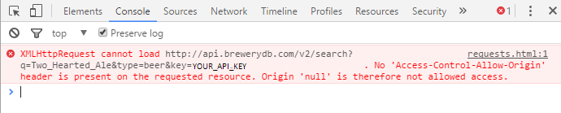

BreweryDB API How-To
So we've made our first request, and so far it seems pretty straightforward, right? You make a request from your domain to get some info from another domain. There are a lot of API's that work this way. BreweryDB is not one of them.
The issue is that, by default, your browser will not allow Cross-domain AJAX requests to occur for security purposes. Bad things can happen if anyone could write a script that can get, put, or delete data on whatever website they want. So doing this is restricted in many cases. The most common way around it is for the server operater to include a CORS (Cross-origin resource sharing) header in the response that tells the browser that they are allowing cross-origin requests to happen. It makes using APIs pretty easy! Just do what we did earlier and it should work. The BreweryDB API, as you may have guessed, does not include such headers. So when you try this without our add-on, you get something like this: 
The add-on that we installed earlier disables the CORS checking mechanism in your chrome browser, so it will not restrict the response. If you turn it off, or open this guide in a different browser, you will find that the last page example doesn't return any results. This solution is a band-aid. It's not a proper solution, and the only reason I'm using it here is to demonstrate the basics of the API without getting into much more complicated processes yet. In order for you to properly use my site, you had to download a special plug in. No decent site that uses this API for an actual user experience is going to make every user change their browser. It's not good practice. There are other, better ways to make it so that anyone can use your site and the API without having to change their experience.
For some APIs, theres a technique called JSONP that allows you to overcome the same-origin policy. I would go over this in greater depth, but unfortunately, BreweryDB does not support this either. If you want to learn more about JSONP, the wikipedia page here would be a good place to start. But that's not for us.
In order to get things working on your own site, without forcing your users to download anything, you're going to need a web proxy. Essentially, a web proxy is a place in your own domain where you will send a request. This proxy will then take the request, along with all of the data the user entered in the browser, and send a request to the other site. Now the proxy doesn't have anything to do with the browser. It's on your server, so it can send and recieve to it's programmed heart's content without having to worry about CORS. So it sends the data, and it gets the response object. The proxy will in turn send that object back to page that first sent the request. But since the data is coming from your own in-domain proxy, and not the external site, then the browser will not balk, as it technically never made a cross-domain request. Pretty clever, right? There are a lot of ways to make a web proxy, and there are a number of proxies online, many in PHP, that are available for you to use, or base your own off of. I'm not going to go into the inner workings of that specifically, but I will demonstrate What I've said above to some extent to get you started.
So lets say you have your site up at http://user.website.com/MyWebsite. You have your proxy at http://user.website.com/MyWebsite/proxy.php. When you make your request like you did before, you construct a different url, like so:
var base = "http://user.website.com/MyWebsite/proxy.php"
var beerName = document.getElementById('br').value;
var bts = beerName.split(' ').join('_');
var type = "%26type%3dbeer";
var key = "%26key%3dd9e3c76540e2267dd4f9e09ede879957";
var route = "?route=%2fv2%2fsearch%3fq%3d";
var fullUrl = base + route + bts + type + key
This url is obviously pretty different. The important part to note is that the base url has user.website.com, which is in the same domain, so no CORS is needed. The other items are url encoded, which means that, for instance the = sign becomes %3d, and so on. The proxy will recieve this request. And inside the proxy file is the proper base url, namely http://api.brewerydb.com. All the proxy has to do is attach the route and all the other info to the end of this url, send it off, then relay the info back to the page that sent a request to it. It's neat, if a bit complicated. If you're not sure on how to get something like this working on your own, now would be a good time to go looking for some answers. If you're ready to continute working with the BreweryDB API, click next!